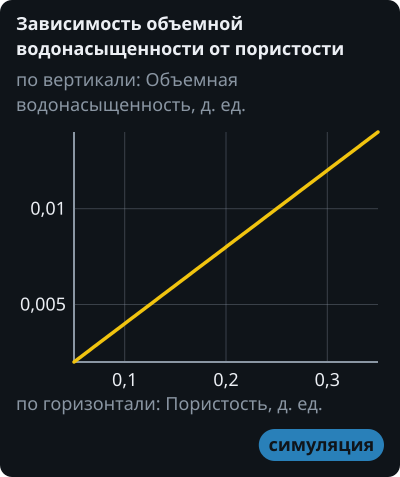
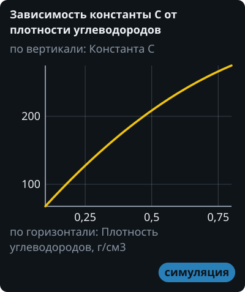
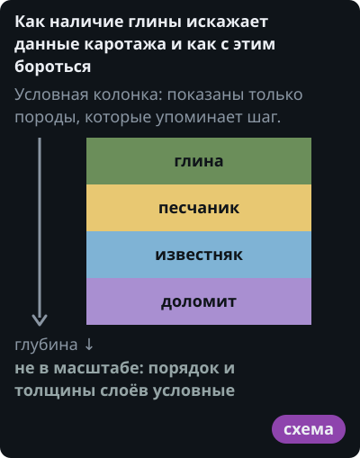

Конспект: Log Interpretation
1. Зачем нужно переводить данные каротажа в запасы углеводородов · стр. 126
Определение пористости и истинного сопротивления пласта является первым шагом для пересчета данных каротажа в запасы нефти, газа и воды. Полученные оценки используются для принятия решения о возможности испытания скважины.
- Для данных: Сырые данные каротажа через расчет пористости и сопротивления преобразуются в оценки объемов флюидов, но требуют валидации сторонними данными.
- Где ломается: Автоматическое применение интерпретации каротажа без учета испытаний и шлама приводит к ложным выводам о продуктивности интервала.
- Гипотеза: Модель прогноза запасов по каротажу деградирует при отсутствии кросс-доменных признаков из бурения и испытаний.
2. Как быстро отличить пласты-коллекторы от не-коллекторов по кривым · стр. 126, 140
Перед детальной обработкой разрез сканируют, чтобы быстро отделить коллекторы от неколлекторов и наметить зоны с потенциальными углеводородами и водой.
- Для данных: По кривым сопротивления для терригенных пород и пористости для карбонатов можно выделить зоны интереса до начала детального расчета.
- Где ломается: Применение пути для терригенных пород к карбонатам (или наоборот) приводит к ошибочному выделению коллекторов.
- Гипотеза: Автоматический классификатор зон интереса может использовать ветвление по литологии аналогично экспертной блок-схеме.
3. Как рассчитать насыщенность воды в неизмененной и промытой зонах · стр. 126, 127
Водонасыщенность неизмененной зоны рассчитывается по фундаментальной формуле Арчи. Для ее полной оценки требуется проверить ряд дополнительных условий по продуктивности и проницаемости.
S_w = \left( \frac{a \times R_w}{R_t \times \phi^m} \right)^{\frac{1}{n}} \tag{7.1}S_{xo} = \left( \frac{a \times R_{mf}}{R_{xo} \times \phi^m} \right)^{\frac{1}{n}} \tag{7.2}- Для данных: Данные глубокого и малого сопротивления, а также пористости позволяют рассчитать Sw и Sxo для оценки насыщения и подвижности.
- Где ломается: Расчет нарушается при некорректном задании параметров цементации, извилистости и сопротивлений пластовой воды или фильтра.
- Гипотеза: Модель машинного обучения может выучить неявную связь между сопротивлениями и насыщением без явного расчета по формуле Арчи.
4. Как оценить подвижные углеводороды без знания пористости · стр. 127, 128
Метод отношений позволяет определять водонасыщенность и индекс подвижных углеводородов по соотношению сопротивлений зон пласта, исключая из расчётов неизвестную пористость. Для уточнения результатов метод сопоставляют с уравнением Арчи, корректируя профиль проникновения.
- Для данных: Данные глубокого и мелкого сопротивления совместно с удельными сопротивлениями фильтра и воды позволяют оценивать насыщение и подвижность углеводородов даже при отсутствии данных пористости.
- Где ломается: Метод дает искажения при сложных профилях вторжения (кольцевой, переходный), влиянии соседних высокоомных пластов или в низкопроницаемых карбонатах с выщебренной пористостью.
- Гипотеза: Автоматизированное сравнение Swa и Swr можно использовать как признак аномалий качества каротажа сопротивления в пайплайне предобработки данных.
5. Быстрые визуальные индикаторы углеводородов по кривым · стр. 128, 129, 130, 131
Экспресс-методы позволяют быстро находить потенциально нефтегазоносные зоны с помощью сравнения кривых сопротивления, SP и расчетных параметров без трудоемкого полного счета.
SP = -K \times \log\left(\frac{R_{xo}}{R_o}\right)R_{wa} = \frac{R_t \times \phi^m}{a}S_w = \frac{\phi_{conductivity}}{\phi_{actual}}- Для данных: Кривые отношений Rxo/Rt, Rwa, проводимостной пористости и Ro позволяют прямо на планшете каротажа видеть расхождения и определять перспективные интервалы.
- Где ломается: Методы дают сбои в низкопористых коллекторах и при неверном задании параметров пластовой воды или литологии.
- Гипотеза: Алгоритм сегментации аномалий на планшете можно автоматизировать через пороговые правила по отношению Rxo/Rt и Rwa.
6. Как проверить, находится ли пласт в равновесии и свободен ли от воды · стр. 131, 141
Объемная водонасыщенность (BVW) представляет собой произведение водонасыщенности и пористости. Постоянные значения BVW по разрезу указывают на единый тип породы и достижение остаточной водонасыщенности, при которой скважина дает чистый приток нефти без воды.
The product of a formation's water saturation (Sw) and its porosity (φ) is the bulk volume of water (BVW).
- Для данных: На графике Бакклза (пористость против водонасыщенности в линейных масштабах) точки постоянного BVW лежат на гиперболах. Если точки образуют плотный кластер вдоль одной гиперболы — пласт на остаточной водонасыщенности и дает чистую нефть; если точки рассеяны — в пласте есть подвижная вода и идет добыча воды.
- Где ломается: Перестает работать в карбонатах со сложной пористостью, где значения BVW служат лишь общим ориентиром, а также при изменении минерализации воды или литологии в пределах интервала.
- Гипотеза: Кластеризация точек в пространстве (пористость, Sw) по гиперболическим уровням позволяет автоматически выделять интервалы чистой нефти без ручного анализа кривых.
7. Графические методы определения параметров пласта по кроссплотам · стр. 132, 133, 134, 135, 142, 143, 144, 145
Кроссплоты Pickett и Hingle представляют собой графические методы решения уравнения Арчи для оценки водонасыщенности, параметров пласта и литологии без сложных предварительных вычислений.
- Для данных: На кроссплотах точки песчаника из Оклахомы образуют кластеры, позволяющие графически выделить линию чистой воды и рассчитать водонасыщенность аномальных точек.
- Где ломается: Методы не работают, если литология или сопротивление воды меняются в пределах интервала сопоставления, либо если в разрезе отсутствует достаточный диапазон пористости.
- Гипотеза: Кластеризацию точек на кроссплотах можно автоматизировать алгоритмами unsupervised learning для автоматического выделения водоносных и продуктивных интервалов.
8. Как рассчитать проницаемость пласта по пористости и связанной воде · стр. 134, 135, 136, 146
Формулы проницаемости по ГИС применимы только в зонах с неснижаемой водонасыщенностью. Для расчетов используются модели Вилли-Роуза, Тимура и Коутса-Думануара.
K = \left( 250 \times \frac{\phi^3}{S_{\text{wirr}}} \right)^2 \text{ (medium-gravity oils)}K = \left( 79 \times \frac{\phi^3}{S_{\text{wirr}}} \right)^2 \text{ dry gas)}K = \left( \frac{93 \times \phi^{2.2}}{S_{\text{wirr}}} \right)^2C = 23 + 465 \times \rho_{h} - 188 \times \rho_{h}^{2}W = \left\{(3.75 - \phi) + \left[ \frac{(\log(R_{w} / R_{t \text{ irr}}) + 2.2)^{2}}{2.0} \right] \right\}^{\frac{1}{2}}K = \left[ \frac{C \times \phi^{2W}}{W^{4} \times (R_{w} / R_{t \text{ irr}})} \right]^{2}
- Для данных: В данных ГИС проницаемость не измеряется напрямую, а оценивается через пористость и водонасыщенность при условии неснижаемой воды.
- Где ломается: Оценка не работает в зонах перехода выше ВНК, где объемная водонасыщенность непостоянна.
- Гипотеза: Модель машинного обучения сможет предсказать проницаемость без проверки зоны на неснижаемую водонасыщенность, но получит большую ошибку.
9. Как наличие глины искажает данные каротажа и как с этим бороться · стр. 136
Присутствие глины и сланца в породе искажает значения пористости и водонасыщенности, занижая последнюю и создавая риск перепутать водоносный пласт с продуктивным. Методы вроде Waxman-Smits и dual water учитывают электрические свойства глин для точного расчёта.

- Для данных: В глинистых коллекторах стандартные кривые сопротивления дают сниженный контраст и занижают водонасыщенность, если не применять поправки на глинистость.
- Где ломается: Обычные уравнения расчёта Sw без учёта глины полностью ломаются и занижают значения в разрезах с содержанием сланца выше 10-15%.
- Гипотеза: Модель машинного обучения, предсказывающая Sw без признаков глинистости, выдаст заниженную воду и ложно расценит водяной пласт как нефтенасыщенный.